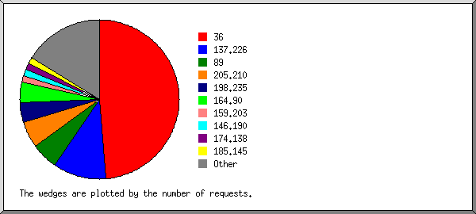
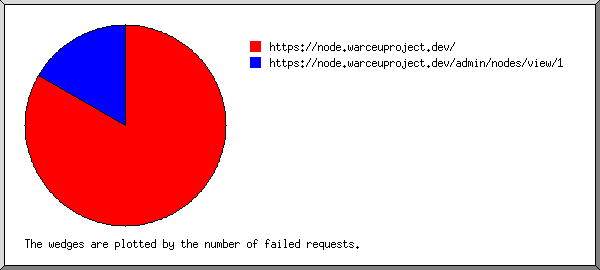
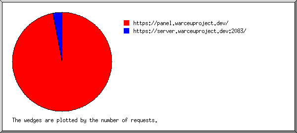
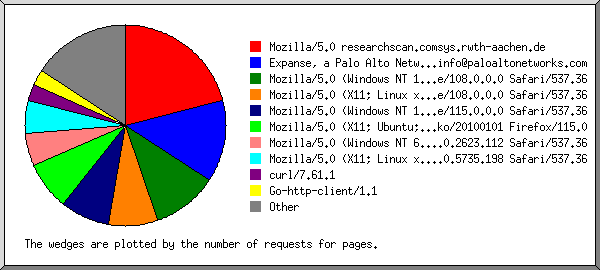
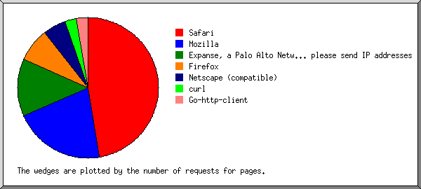
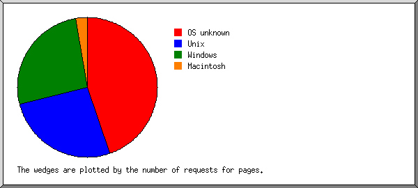
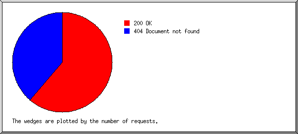
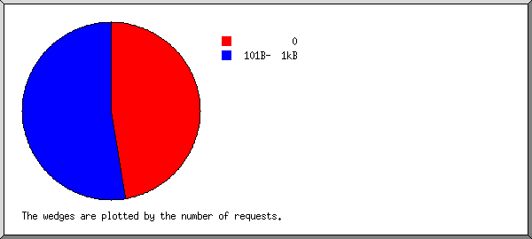
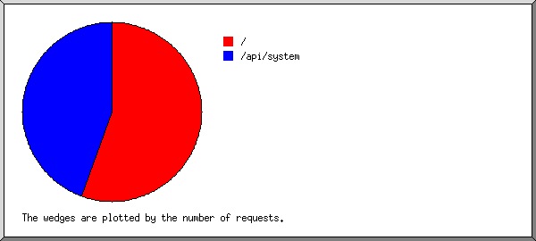

Web Server Statistics for node.warceuproject.dev
Web Server Statistics for node.warceuproject.dev
Program started on Mon, Aug 28 2023 at 2:47 PM.
Analyzed requests from Tue, Aug 01 2023 at 8:46 PM to Mon, Aug 28 2023 at 1:09 AM (26.18 days).
Web Server Statistics for node.warceuproject.devProgram started on Mon, Aug 28 2023 at 2:47 PM.
Analyzed requests from Tue, Aug 01 2023 at 8:46 PM to Mon, Aug 28 2023 at 1:09 AM (26.18 days).
(Go To: Top | General Summary | Monthly Report | Daily Summary | Hourly Summary | Domain Report | Organization Report | Failed Referrer Report | Referring Site Report | Browser Report | Browser Summary | Operating System Report | Status Code Report | File Size Report | File Type Report | Directory Report | Request Report)
Figures in parentheses refer to the 7-day period ending Aug 28 2023 at 2:47 PM.
Successful requests: 74 (4)
Average successful requests per day: 2 (0)
Successful requests for pages: 41 (4)
Average successful requests for pages per day: 1 (0)
Failed requests: 47 (3)
Distinct files requested: 6 (25)
Distinct hosts served: 29 (30)
Data transferred: 23.73 kilobytes (2.43 kilobytes)
Average data transferred per day: 927 bytes (356 bytes)
(Go To: Top | General Summary | Monthly Report | Daily Summary | Hourly Summary | Domain Report | Organization Report | Failed Referrer Report | Referring Site Report | Browser Report | Browser Summary | Operating System Report | Status Code Report | File Size Report | File Type Report | Directory Report | Request Report)
Each unit ( ) represents 2 requests for pages or part thereof.
) represents 2 requests for pages or part thereof.
| month | #reqs | #pages | |
|---|---|---|---|
| Aug 2023 | 74 | 41 |   |
Busiest month: Aug 2023 (41 requests for pages).
(Go To: Top | General Summary | Monthly Report | Daily Summary | Hourly Summary | Domain Report | Organization Report | Failed Referrer Report | Referring Site Report | Browser Report | Browser Summary | Operating System Report | Status Code Report | File Size Report | File Type Report | Directory Report | Request Report)
Each unit () represents 1 request for a page.
| day | #reqs | #pages | |
|---|---|---|---|
| Sun | 3 | 3 |  |
| Mon | 1 | 1 | |
| Tue | 7 | 7 | |
| Wed | 41 | 8 |  |
| Thu | 10 | 10 | |
| Fri | 1 | 1 | |
| Sat | 11 | 11 | |
(Go To: Top | General Summary | Monthly Report | Daily Summary | Hourly Summary | Domain Report | Organization Report | Failed Referrer Report | Referring Site Report | Browser Report | Browser Summary | Operating System Report | Status Code Report | File Size Report | File Type Report | Directory Report | Request Report)
Each unit () represents 1 request for a page.
| hour | #reqs | #pages | |
|---|---|---|---|
| 0 | 0 | 0 | |
| 1 | 1 | 1 | |
| 2 | 1 | 1 | |
| 3 | 0 | 0 | |
| 4 | 8 | 8 | |
| 5 | 3 | 3 | |
| 6 | 5 | 5 | |
| 7 | 0 | 0 | |
| 8 | 4 | 4 | |
| 9 | 1 | 1 | |
| 10 | 3 | 3 | |
| 11 | 0 | 0 | |
| 12 | 33 | 0 | |
| 13 | 1 | 1 | |
| 14 | 0 | 0 | |
| 15 | 3 | 3 | |
| 16 | 2 | 2 | |
| 17 | 2 | 2 | |
| 18 | 0 | 0 | |
| 19 | 0 | 0 | |
| 20 | 6 | 6 | |
| 21 | 0 | 0 | |
| 22 | 1 | 1 | |
| 23 | 0 | 0 |
(Go To: Top | General Summary | Monthly Report | Daily Summary | Hourly Summary | Domain Report | Organization Report | Failed Referrer Report | Referring Site Report | Browser Report | Browser Summary | Operating System Report | Status Code Report | File Size Report | File Type Report | Directory Report | Request Report)
Listing domains, sorted by the amount of traffic.
| #reqs | %bytes | domain |
|---|---|---|
| 74 | 100% | [unresolved numerical addresses] |
(Go To: Top | General Summary | Monthly Report | Daily Summary | Hourly Summary | Domain Report | Organization Report | Failed Referrer Report | Referring Site Report | Browser Report | Browser Summary | Operating System Report | Status Code Report | File Size Report | File Type Report | Directory Report | Request Report)

Listing the top 20 organizations by the number of requests, sorted by the number of requests.
| #reqs | %bytes | organization |
|---|---|---|
| 36 | 7.69% | 36 |
| 8 | 20.51% | 137.226 |
| 4 | 5.13% | 89 |
| 4 | 10.26% | 205.210 |
| 3 | 7.69% | 198.235 |
| 3 | 7.69% | 164.90 |
| 1 | 2.56% | 159.203 |
| 1 | 2.56% | 146.190 |
| 1 | 2.56% | 174.138 |
| 1 | 2.56% | 185.145 |
| 1 | 2.56% | 51 |
| 1 | 2.56% | 54 |
| 1 | 2.56% | 167.248 |
| 1 | 2.56% | 188.165 |
| 1 | 2.56% | 47 |
| 1 | 2.56% | 87 |
| 1 | 2.56% | 154.53 |
| 1 | 2.56% | 65.154 |
| 1 | 2.56% | 65.155 |
| 1 | 2.56% | 106 |
| 2 | 5.13% | [not listed: 2 organizations] |
(Go To: Top | General Summary | Monthly Report | Daily Summary | Hourly Summary | Domain Report | Organization Report | Failed Referrer Report | Referring Site Report | Browser Report | Browser Summary | Operating System Report | Status Code Report | File Size Report | File Type Report | Directory Report | Request Report)

Listing referring URLs, sorted by the number of failed requests.
| #reqs | URL |
|---|---|
| 5 | https://node.warceuproject.dev/ |
| 1 | https://node.warceuproject.dev/admin/nodes/view/1 |
(Go To: Top | General Summary | Monthly Report | Daily Summary | Hourly Summary | Domain Report | Organization Report | Failed Referrer Report | Referring Site Report | Browser Report | Browser Summary | Operating System Report | Status Code Report | File Size Report | File Type Report | Directory Report | Request Report)

Listing referring sites, sorted by the number of requests.
| #reqs | site |
|---|---|
| 33 | https://panel.warceuproject.dev/ |
| 1 | https://server.warceuproject.dev:2083/ |
(Go To: Top | General Summary | Monthly Report | Daily Summary | Hourly Summary | Domain Report | Organization Report | Failed Referrer Report | Referring Site Report | Browser Report | Browser Summary | Operating System Report | Status Code Report | File Size Report | File Type Report | Directory Report | Request Report)

Listing browsers with at least 1 request for a page, sorted by the number of requests for pages.
| #reqs | #pages | browser |
|---|---|---|
| 8 | 8 | Mozilla/5.0 researchscan.comsys.rwth-aachen.de |
| 5 | 5 | Expanse, a Palo Alto Networks company, searches across the global IPv4 space multiple times per day to identify customers' presences on the Internet. If you would like to be excluded from our scans, please send IP addresses/domains to: scaninfo@paloaltonetworks.com |
| 4 | 4 | Mozilla/5.0 (Windows NT 10.0; Win64; x64) AppleWebKit/537.36 (KHTML, like Gecko) Chrome/108.0.0.0 Safari/537.36 |
| 3 | 3 | Mozilla/5.0 (X11; Linux x86_64) AppleWebKit/537.36 (KHTML, like Gecko) Chrome/108.0.0.0 Safari/537.36 |
| 36 | 3 | Mozilla/5.0 (Windows NT 10.0; Win64; x64) AppleWebKit/537.36 (KHTML, like Gecko) Chrome/115.0.0.0 Safari/537.36 |
| 3 | 3 | Mozilla/5.0 (X11; Ubuntu; Linux x86_64; rv:109.0) Gecko/20100101 Firefox/115.0 |
| 2 | 2 | Mozilla/5.0 (Windows NT 6.1) AppleWebKit/537.36 (KHTML, like Gecko) Chrome/49.0.2623.112 Safari/537.36 |
| 2 | 2 | Mozilla/5.0 (X11; Linux x86_64) AppleWebKit/537.36 (KHTML, like Gecko) HeadlessChrome/114.0.5735.198 Safari/537.36 |
| 1 | 1 | curl/7.61.1 |
| 1 | 1 | Go-http-client/1.1 |
| 1 | 1 | Mozilla/5.0 (Macintosh; U; Intel Mac OS X 10_6_4; en-US) AppleWebKit/534.1 (KHTML, like Gecko) Chrome/104.0.0.0 Safari/534.1 |
| 1 | 1 | Mozilla/5.0 (Linux; Android 11; M2004J15SC) AppleWebKit/537.36 (KHTML, like Gecko) Chrome/103.0.5060.114 Mobile Safari/537.36 |
| 1 | 1 | Mozilla/5.0 (compatible; CensysInspect/1.1; +https://about.censys.io/) |
| 1 | 1 | Mozilla/5.0 (Windows NT 10.0) AppleWebKit/537.36 (KHTML, like Gecko) Chrome/42.0.2311.135 Safari/537.36 Edge/12.10240 |
| 1 | 1 | Mozilla/5.0 (Linux; Android 6.0; HTC One M9 Build/MRA183828) AppleWebKit/537.36 (KHTML, like Gecko) Chrome/52.0.2587.98 Mobile Safari/537.3 |
| 1 | 1 | Mozilla/5.0 (compatible; InternetMeasurement/1.0; +https://internet-measurement.com/) |
(Go To: Top | General Summary | Monthly Report | Daily Summary | Hourly Summary | Domain Report | Organization Report | Failed Referrer Report | Referring Site Report | Browser Report | Browser Summary | Operating System Report | Status Code Report | File Size Report | File Type Report | Directory Report | Request Report)

Listing browsers with at least 1 request for a page, sorted by the number of requests for pages.
| # | #reqs | #pages | browser |
|---|---|---|---|
| 1 | 51 | 18 | Safari |
| 50 | 17 | Safari/537 | |
| 1 | 1 | Safari/534 | |
| 2 | 8 | 8 | Mozilla |
| 3 | 5 | 5 | Expanse, a Palo Alto Networks company, searches across the global IPv4 space multiple times per day to identify customers' presences on the Internet. If you would like to be excluded from our scans, please send IP addresses |
| 5 | 5 | Expanse, a Palo Alto Networks company, searches across the global IPv4 space multiple times per day to identify customers' presences on the Internet. If you would like to be excluded from our scans, please send IP addresses/domains | |
| 4 | 3 | 3 | Firefox |
| 3 | 3 | Firefox/115 | |
| 5 | 2 | 2 | Netscape (compatible) |
| 6 | 1 | 1 | curl |
| 1 | 1 | curl/7 | |
| 7 | 1 | 1 | Go-http-client |
| 1 | 1 | Go-http-client/1 |
(Go To: Top | General Summary | Monthly Report | Daily Summary | Hourly Summary | Domain Report | Organization Report | Failed Referrer Report | Referring Site Report | Browser Report | Browser Summary | Operating System Report | Status Code Report | File Size Report | File Type Report | Directory Report | Request Report)

Listing operating systems, sorted by the number of requests for pages.
| # | #reqs | #pages | OS |
|---|---|---|---|
| 1 | 17 | 17 | OS unknown |
| 2 | 10 | 10 | Unix |
| 10 | 10 | Linux | |
| 3 | 43 | 10 | Windows |
| 41 | 8 | Windows NT | |
| 2 | 2 | Unknown Windows | |
| 4 | 1 | 1 | Macintosh |
(Go To: Top | General Summary | Monthly Report | Daily Summary | Hourly Summary | Domain Report | Organization Report | Failed Referrer Report | Referring Site Report | Browser Report | Browser Summary | Operating System Report | Status Code Report | File Size Report | File Type Report | Directory Report | Request Report)

Listing status codes, sorted numerically.
| #reqs | status code |
|---|---|
| 74 | 200 OK |
| 47 | 404 Document not found |
(Go To: Top | General Summary | Monthly Report | Daily Summary | Hourly Summary | Domain Report | Organization Report | Failed Referrer Report | Referring Site Report | Browser Report | Browser Summary | Operating System Report | Status Code Report | File Size Report | File Type Report | Directory Report | Request Report)

| size | #reqs | %bytes |
|---|---|---|
| 0 | 35 | |
| 1B- 10B | 0 | |
| 11B- 100B | 0 | |
| 101B- 1kB | 39 | 100% |
(Go To: Top | General Summary | Monthly Report | Daily Summary | Hourly Summary | Domain Report | Organization Report | Failed Referrer Report | Referring Site Report | Browser Report | Browser Summary | Operating System Report | Status Code Report | File Size Report | File Type Report | Directory Report | Request Report)
Listing extensions with at least 0.1% of the traffic, sorted by the amount of traffic.
| #reqs | %bytes | extension |
|---|---|---|
| 41 | 100% | [directories] |
| 33 | [not listed: 1 extension] |
(Go To: Top | General Summary | Monthly Report | Daily Summary | Hourly Summary | Domain Report | Organization Report | Failed Referrer Report | Referring Site Report | Browser Report | Browser Summary | Operating System Report | Status Code Report | File Size Report | File Type Report | Directory Report | Request Report)
Listing directories with at least 0.01% of the traffic, sorted by the amount of traffic.
| #reqs | %bytes | directory |
|---|---|---|
| 41 | 100% | [root directory] |
| 33 | [not listed: 1 directory] |
(Go To: Top | General Summary | Monthly Report | Daily Summary | Hourly Summary | Domain Report | Organization Report | Failed Referrer Report | Referring Site Report | Browser Report | Browser Summary | Operating System Report | Status Code Report | File Size Report | File Type Report | Directory Report | Request Report)

Listing files with at least 20 requests, sorted by the number of requests.
| #reqs | %bytes | last time | file |
|---|---|---|---|
| 41 | 100% | Aug/27/23 9:21 AM | / |
| 11 | 25.64% | Aug/26/23 10:17 PM | /?47.254.76.138 |
| 33 | Aug/ 2/23 12:57 PM | /api/system |